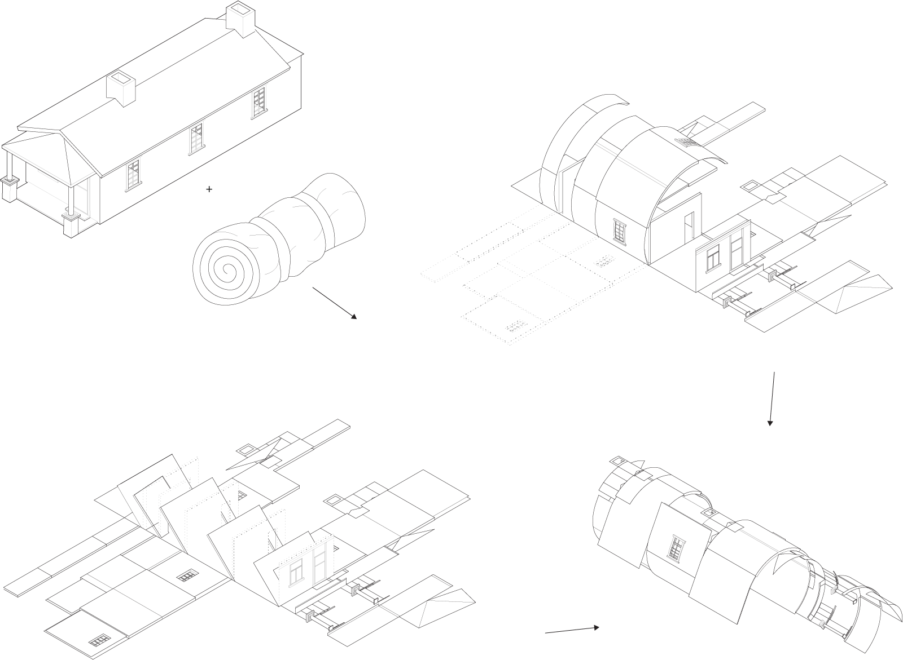
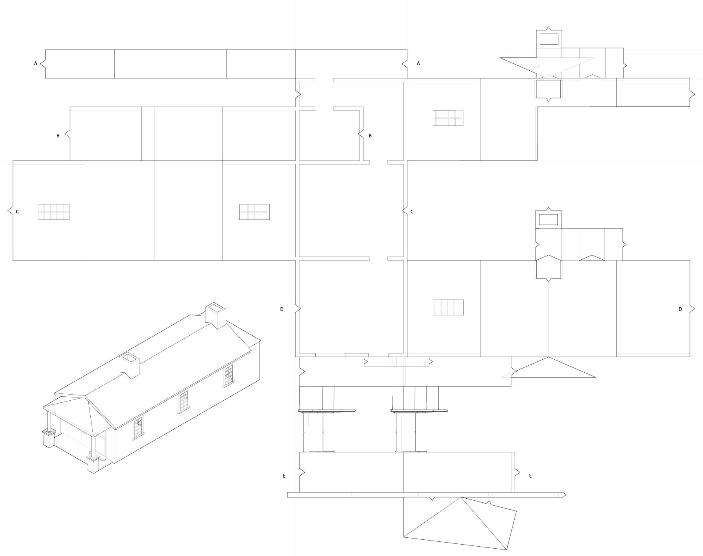
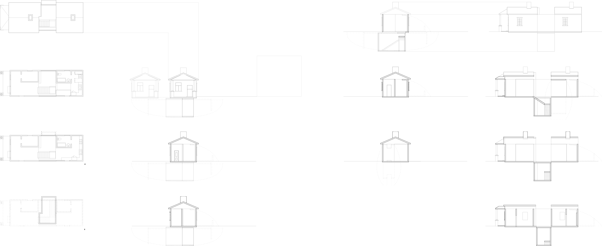
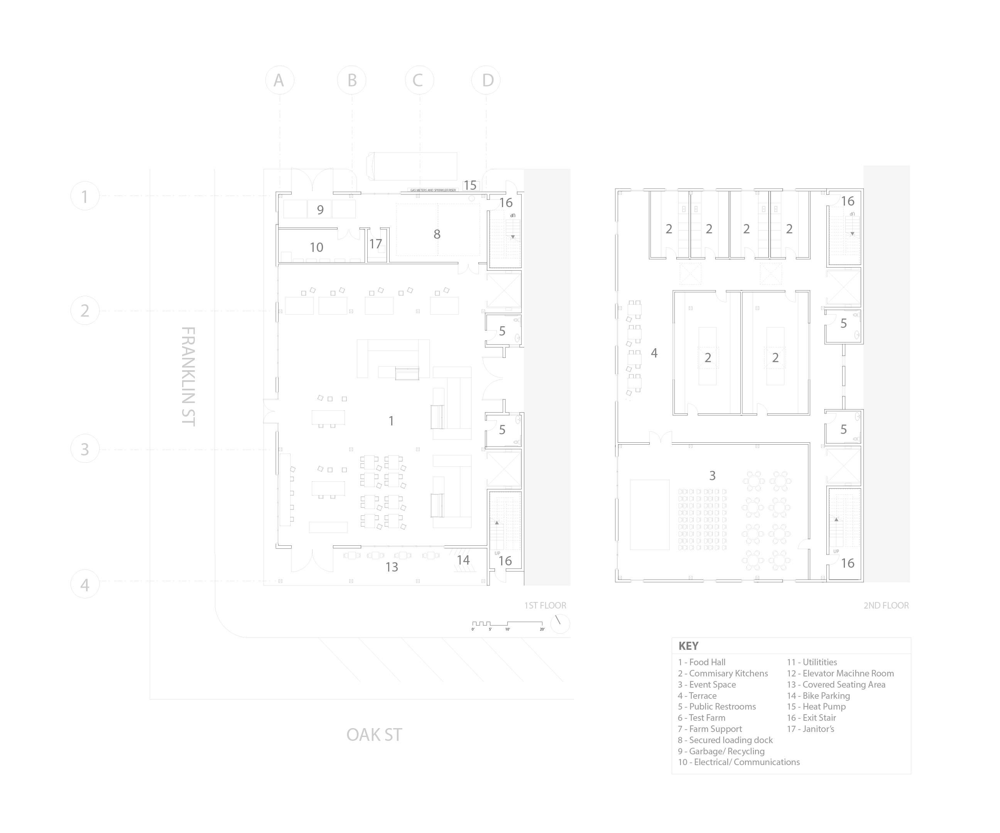
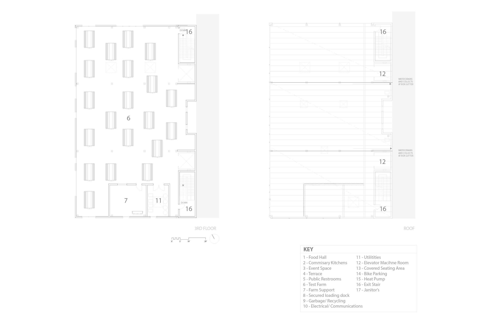
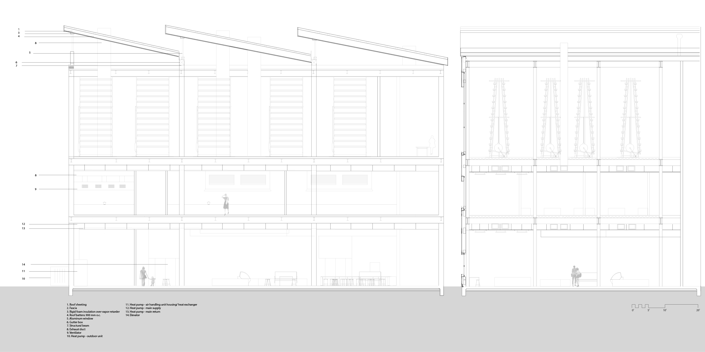

Architecture
Architecture
M.ARCH
Various Projects
This section showcases two projects that are at opposite spectrums. The first project explores form (and ignores some physics) while the second project is more grounded in reality and deals with the process of realistically detailing a building.
Unfolded House

What is a house and what future possibilites are there for a house? For this project I began with a case study on the shotgun house, which is a simple house where each room is repeated one after the other. To better understand the form and structure, I unrolled the shotgun house both digitally and through soft physical models.
Unfolding Studies

Diagrams of one of three different possibilities of how to unroll a shotgun house based
off its program. When the program changes, we begin to unroll in a different direction. One of my tasks was to create a system of unrolling and how a an element would be unrolled. How would I unroll the window frame?
Refolding a House

Translating the house back into hard. Plans and sections of the proposed house using the derived folding logic I created to fold the house back. When I began to reconstruct I found new ways to divide the house. I was able to dig into the ground. A single person could keep the back of his house for his private affairs and leave the front for where he could attend guests. A couple could live in this small house and still have privacy.
Plans for a Food Hall

Sometimes when you enter a building, you might be surprised that the inside of the building is nothing what it’s like on the outside. You may stumble upon the inside, engage with only the restaurants tailored to serve you, the consumer, but have no idea about the workings or the other programs that are housed within. This building is organized in such a manner that the workers, those who work in the kitchens and in the farms, are able to access the urban space easily to distribute their products, but at the same time, the spaces are not easily accessible to the public because it would be quite difficult to be producing five hundred pastries while curious customers are zooming around in your space.

To make this happen, circulation is pushed to towards the back, near the east, while there are two entrances for customers, one in the west and one south. Customers circulate in a circular manner around the food booths like a cafeteria line with seating on the outskirts. While the overall building favors the west as a front, at the ground level, both entrances have an equal importance – food booths face the west and the information desk greets the south. Since the shops are temporary, the column grid acts as a grid marking, so that shops can know the coordinates of where they are positioned. Everything can change and even the panelized system can eventually be rearranged. The absence of cladding signifies where windows and doors are, but this holds no permanence. Everyone is just a tenant of this building and holds no ownership.
Specifications for the Food Hall
Occupancy Classification - A2, Public Assembly Use
Square Footage – 23163 sq. ft.
Construction Type – Type II – A protected non-combustible, fully sprinklered
1 Hr. Exterior walls
1 Hr. Structural frame
1 Hr. Floor/ Ceiling/ Roof assemblies
Egress requirements - 2 means of egress for all spaces above the ground floor. 3 means of egress for ground floor market hall.
Maximum distance to 2 means of egress – 20’ Minimum exit separation – ½ longest diagonal for fully sprinklered building
Square Footage – 23163 sq. ft.
Construction Type – Type II – A protected non-combustible, fully sprinklered
1 Hr. Exterior walls
1 Hr. Structural frame
1 Hr. Floor/ Ceiling/ Roof assemblies
Egress requirements - 2 means of egress for all spaces above the ground floor. 3 means of egress for ground floor market hall.
Maximum distance to 2 means of egress – 20’ Minimum exit separation – ½ longest diagonal for fully sprinklered building
Food Hall Sections
